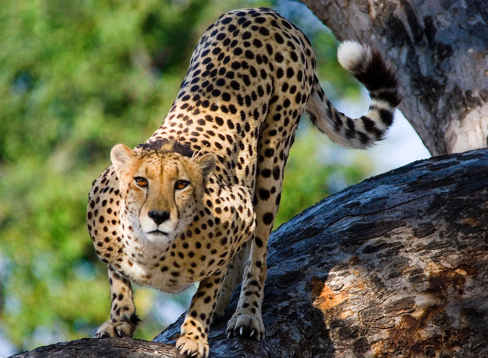

The cheetah is a large cat native to Africa and central Iran. It is the fastest land animal, estimated to be capable of running at 80 to 128 km/h (50 to 80 mph). Cheetahs are famous for their tawny coats covered in black spots, each arranged in a unique pattern to help the animals identify one another.
Scientific Name: Acinonyx jubatus
Average Length: 44 to 56 inches
Average Lifespan: 8 to 10 years
Habitat: Shrublands, grasslands, savannahs, and temperate to hot deserts.